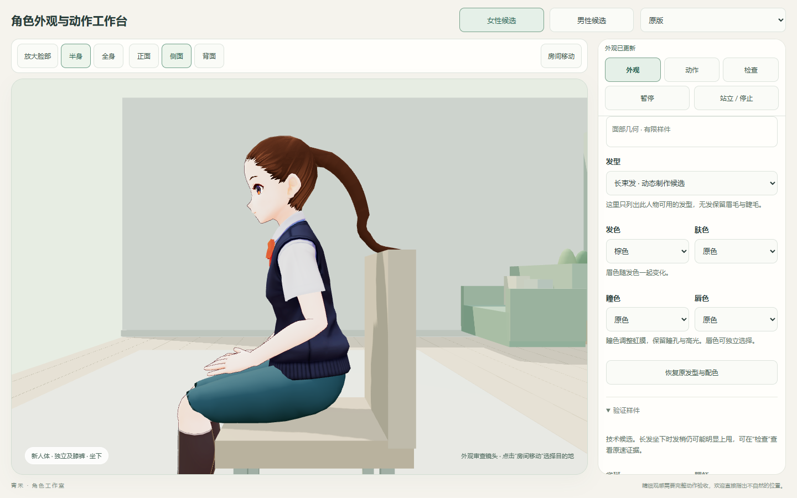
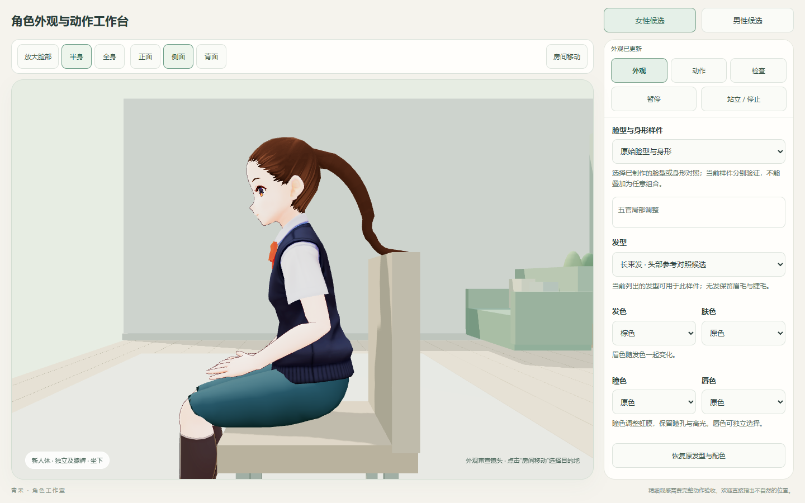
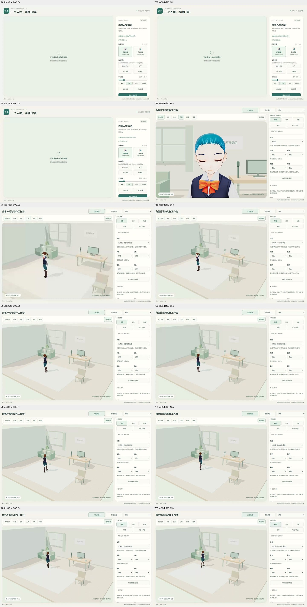
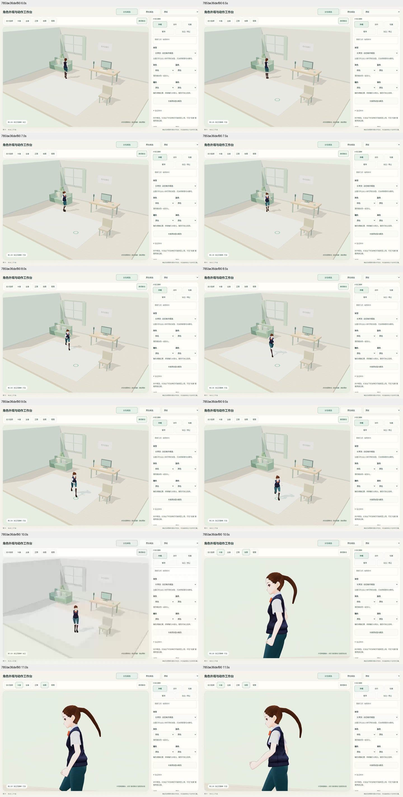
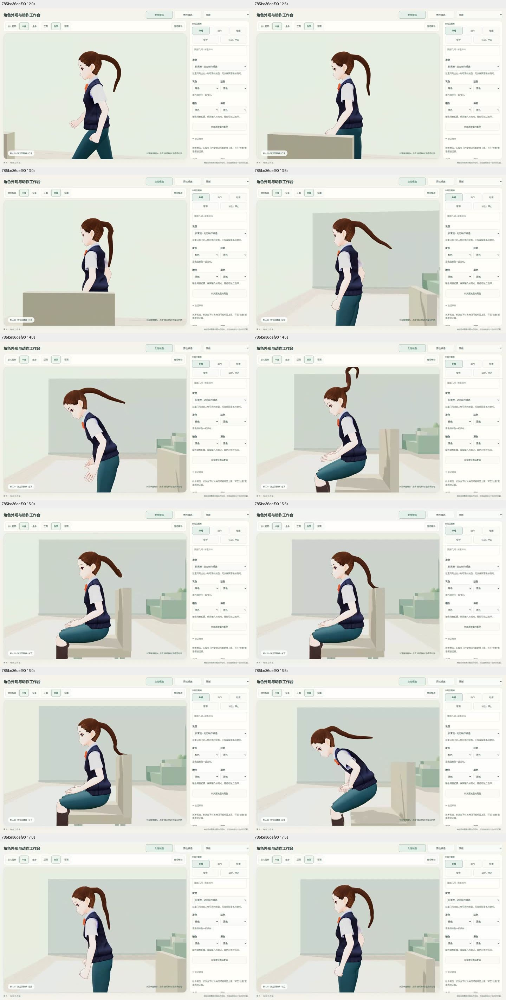
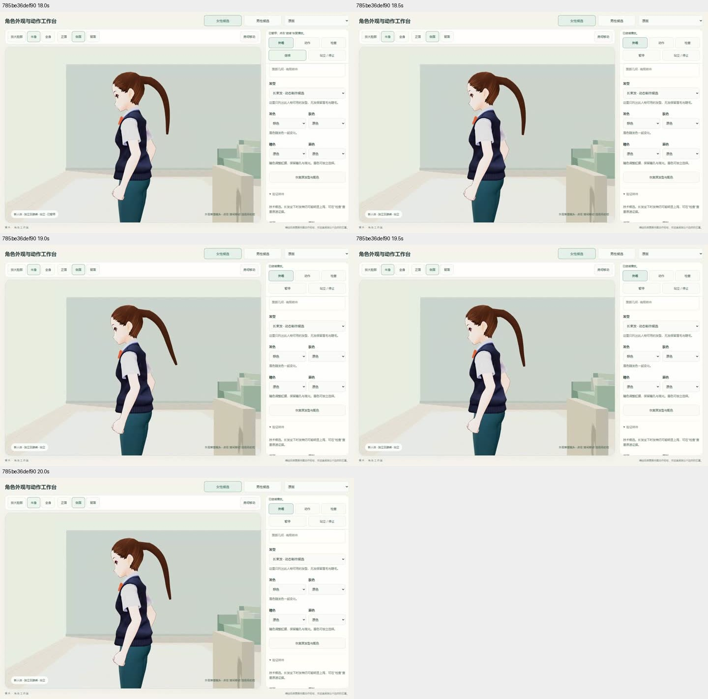
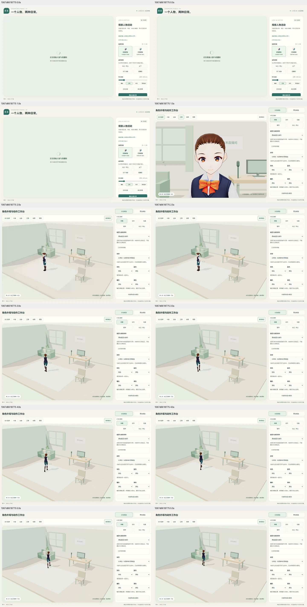
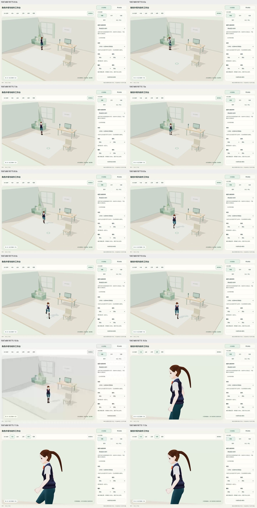
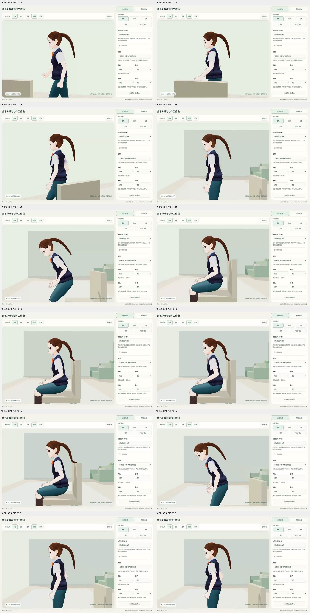
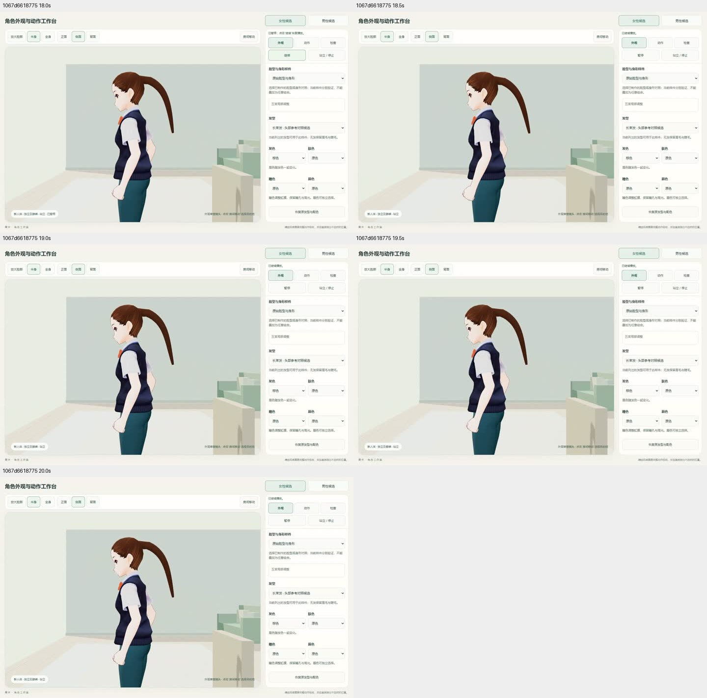

相同原女性、裤装、无帽、走跑与侧面坐起，原片默认1×，加载时间不同，不强行对齐帧号。
新候选只改变头发动态计算的参考节点；保留原模型、重力和碰撞。减少头部运动惯性是实际取舍，不能仅以发梢不上甩认定自然度通过。椅背接触局部折弯仍需观察。本次不修改已封板裙装和舞蹈，也不代表派生身体或帽子适配通过。
源码 23c1140a01d26b6f1c10ac4f8064f366add3ba17

源码 1447d994774e3e22157b38e20422579b508f28dc








